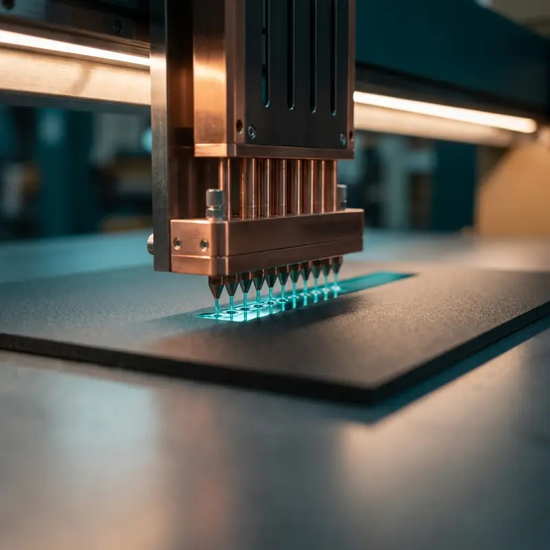

MACHINE GUIDE / DIRECT OBJECT UV
UV Flatbed / Direct-Object System
Direct printing onto qualified rigid blanks and flat or dimensioned substrates.
WHAT THE SYSTEM DOES
Understand the machine before choosing the route.
A UV flatbed system prints directly onto the approved object or substrate while UV energy cures the ink during production.
- Best-considered applicationsAcrylic, wood, stone, rigid panels, plaques, display pieces and selected dimensioned objects that can be safely accommodated.
- Material / surface contextRigid substrates and prepared objects with suitable geometry, surface condition and physical clearance.
- Validation boundaryObject height, flatness, surface preparation, coating, ink response and intended handling must be physically reviewed before release.

PRODUCTION SEQUENCE01–03
Prepare artwork, jig or placement requirements
Print directly, cure and inspect the finished surface
RELATED COMMERCIAL ROUTE
PRODUCTS & OBJECT PRINTING
The machine is a production tool. The customer-facing service is selected from the actual application, material, quantity and finish requirements.
Explore related servicePROJECT ENQUIRY
Bring us the surface.
Share the object or substrate, dimensions, quantity, artwork status and required date. HDC will confirm the appropriate production route after review.
Request a quote